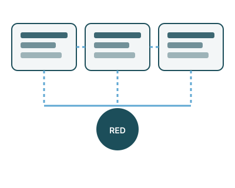
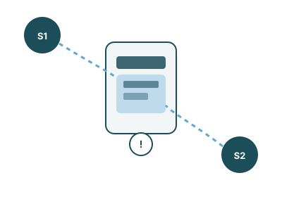
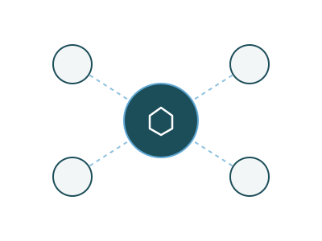

Consistencia fuerte
Antes de confirmar cualquier operación, el sistema verifica el estado en todos los nodos involucrados. Ninguna venta doble puede ocurrir, pero cada operación es más lenta porque depende de esa confirmación conjunta.
Lógica Computacional · Proyecto grupal
Cuando varios servidores comparten la misma información, mantenerlos de acuerdo no es automático. Este proyecto explora qué es la consistencia, sus modelos, un caso real de conflicto y cómo la inteligencia artificial ayuda a resolverlo.
01 — Introducción

Un sistema distribuido es un conjunto de computadoras independientes que se comportan, ante el usuario, como un único sistema. En vez de depender de un solo servidor, la información y el procesamiento se reparten entre varios nodos que se comunican entre sí por red.
La consistencia es la garantía de que todos los nodos de ese sistema muestran, tarde o temprano, la misma versión de los datos. Si un nodo dice que un asiento está disponible y otro dice que ya fue vendido, el sistema es inconsistente.
Porque de ella depende la confiabilidad del sistema completo: ventas duplicadas, saldos incorrectos o reservas dobles son consecuencias directas de una consistencia mal gestionada. Entender sus modelos permite decidir qué tanto sacrificar velocidad a cambio de exactitud.
02 — Tipos de consistencia
Antes de confirmar cualquier operación, el sistema verifica el estado en todos los nodos involucrados. Ninguna venta doble puede ocurrir, pero cada operación es más lenta porque depende de esa confirmación conjunta.
Los nodos no siempre se verifican entre sí antes de actuar, pero se sincronizan después. Si se detecta un conflicto, un mecanismo de prioridad decide qué nodo prevalece, evitando que la inconsistencia se vuelva permanente.
No existe ninguna verificación entre nodos. Cada uno actúa de forma independiente, lo que la hace la opción más rápida y, al mismo tiempo, la más propensa a errores como ventas duplicadas.
| Modelo | Verificación entre nodos | Velocidad | Riesgo de conflicto |
|---|---|---|---|
| Fuerte | Siempre, antes de confirmar | Baja | Nulo |
| Eventual | Solo si hay conflicto detectado | Media | Bajo, mitigado por prioridad |
| Débil | Ninguna | Alta | Alto |
03 — Caso de la vida real

Imaginemos una aerolínea con servidores en distintas ciudades. Dos personas, en países distintos, intentan comprar el mismo asiento casi al mismo instante. Cada solicitud llega a un servidor diferente.
Aquí entra la latencia de red: el tiempo que tarda un mensaje en viajar de un servidor a otro. Si esa latencia es alta, ningún servidor se entera a tiempo de lo que el otro está haciendo, y ambos pueden confirmar la venta del mismo asiento: una venta doble.
El problema no es que los servidores fallen; el problema es que no se enteran a tiempo de lo que el otro ya hizo.
Este caso conecta directamente con la consistencia: es exactamente el escenario que cada modelo —fuerte, eventual o débil— resuelve de manera distinta.
04 — Mejora con Inteligencia Artificial

En sistemas distribuidos modernos, la inteligencia artificial se usa como un árbitro que decide qué nodo debe prevalecer cuando hay un conflicto, en lugar de dejarlo al azar.
05 — Ventajas de la Inteligencia Artificial
Reduce las inconsistencias que ocurrirían si los conflictos se resolvieran al azar.
Permite decisiones casi inmediatas sin esperar la confirmación de todos los nodos.
Optimiza cuándo y hacia dónde sincronizar datos, evitando tráfico innecesario.
Evita ventas dobles y transacciones inválidas que generan reembolsos o reclamos.
El sistema completo se comporta de forma más predecible ante los mismos conflictos.
Conclusión
La consistencia no es un detalle técnico menor: es la diferencia entre un sistema confiable y uno que vende el mismo asiento dos veces. Vimos que la consistencia fuerte prioriza la seguridad sobre la velocidad, la débil hace lo contrario, y la eventual busca un punto intermedio.
La inteligencia artificial no elimina el problema, pero cambia las reglas del juego: en lugar de resolver los conflictos al azar o dejarlos sin resolver, los anticipa y los arbitra con criterio, haciendo que sistemas distribuidos grandes sean, a la vez, rápidos y confiables.